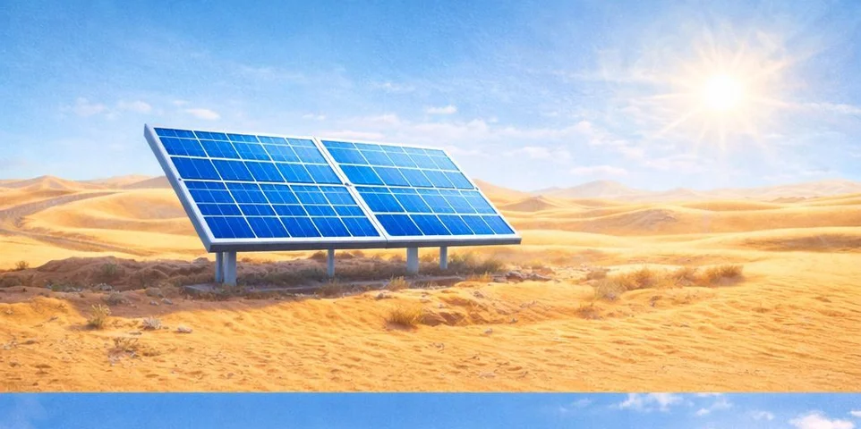
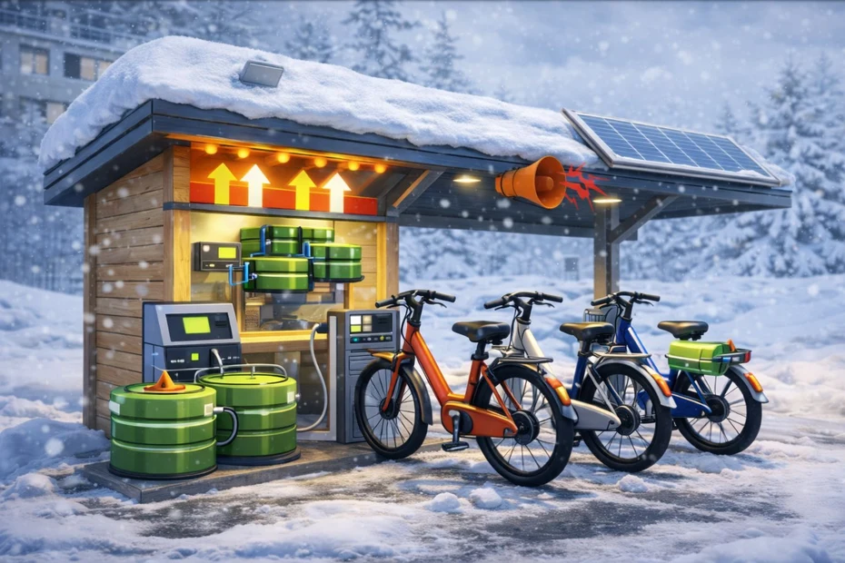

Measure
Record environmental conditions and electrical readings from physical equipment.
Yamagata University · Renewable Energy & Control Systems Research
Explore how sunlight, wind, and temperature differences can power distributed systems. REDT connects physical experiments with digital models so researchers can replay measurements and study operating conditions.

01 Research
The project studies small, distributed energy systems. A digital twin pairs measurements from physical equipment with a virtual model to explore how weather and operating conditions affect the system.
Record environmental conditions and electrical readings from physical equipment.
Recreate those conditions in a virtual system and vary one factor at a time.
Use the readings to compare behavior and investigate operating strategies.
02 Energy systems
SOLAR SIMULATOR AVAILABLE
Photovoltaic cells convert sunlight into electricity. In REDT, irradiance, shade and panel temperature can be compared with electrical behavior.
RESEARCH EXAMPLE
A panel array digital twin with adjustable clouds, tilt and series connections.
03 Simulator
AVAILABLE MODULE
Switch between the physical twin and a virtual solar field. Adjust the weather and the panel layout, inspect a single unit, and compare time-series plots.
Open REDT simulatorSmall wind turbine and Seebeck effect modules are planned.

The presentation proposes a snow-assisted thermoelectric charging station. A temperature difference can generate electricity through the Seebeck effect.